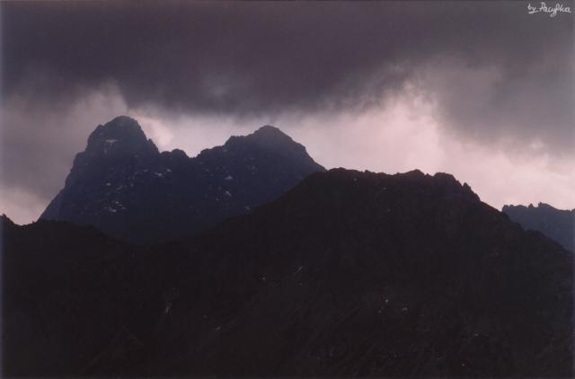

moją ścieżkę samotną twardym grodzą wałem..."
Kosodrzewina na Kępie
fot. Pacyfka

| Żabie Plesa
fot. Mustang |
| "Wilgotne, szorstkie pióra kosmatej zieleni
moją ścieżkę samotną twardym grodzą wałem..." Kosodrzewina na Kępie fot. Pacyfka |
|
|  "I żadnego echa w górach..." Fot. Pacyfka |
| Przeczytaj też
Julian Przyboś, Z Tatr (Pamięci taterniczki, która zginęła na Zamarłej Turni) Teresa Harsdorf - Bromowiczowa, Trzy wiersze o człowieku i o skale [Wiesz, co to jest śmierć?] |
| Jarosław Iwaszkiewicz
1894-1980
Pomnik Karłowicza Ten głaz, ta swastyka,
Tu dolina kwitnąca
Tu dusza śpiewająca
|